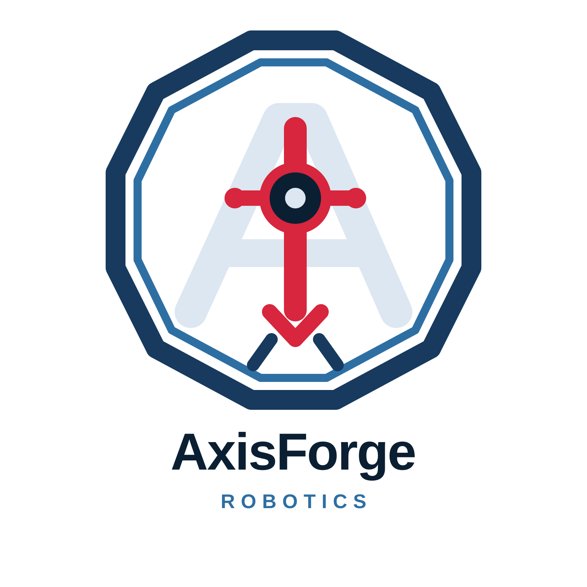
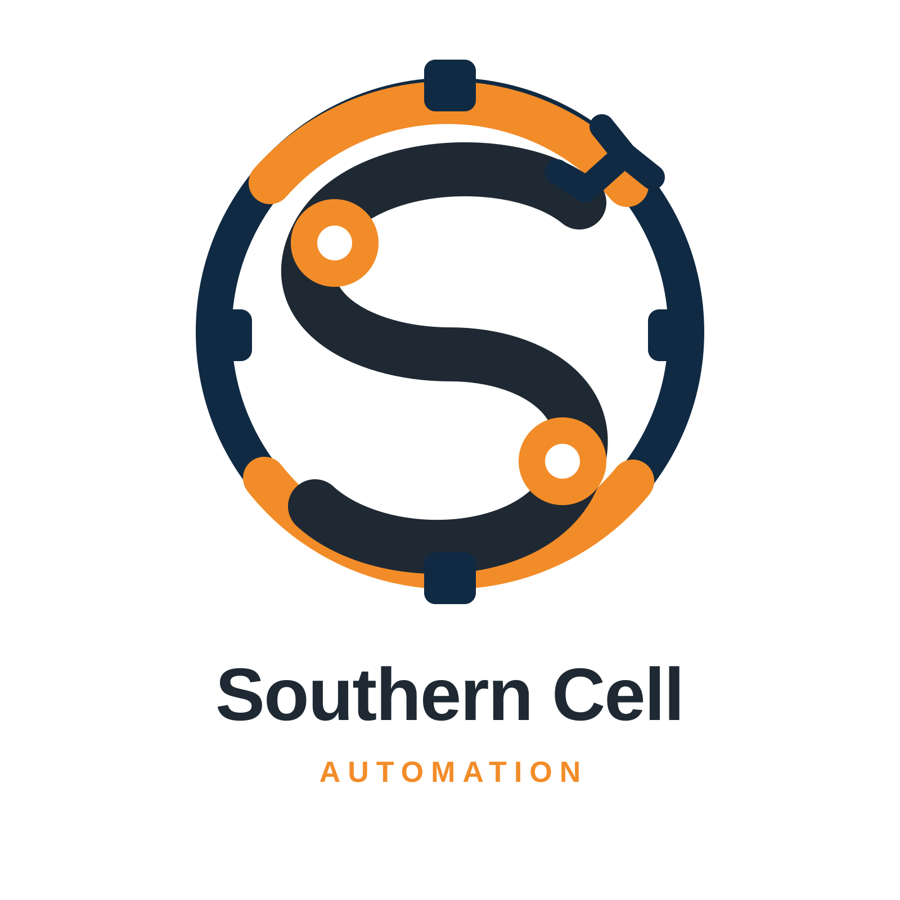
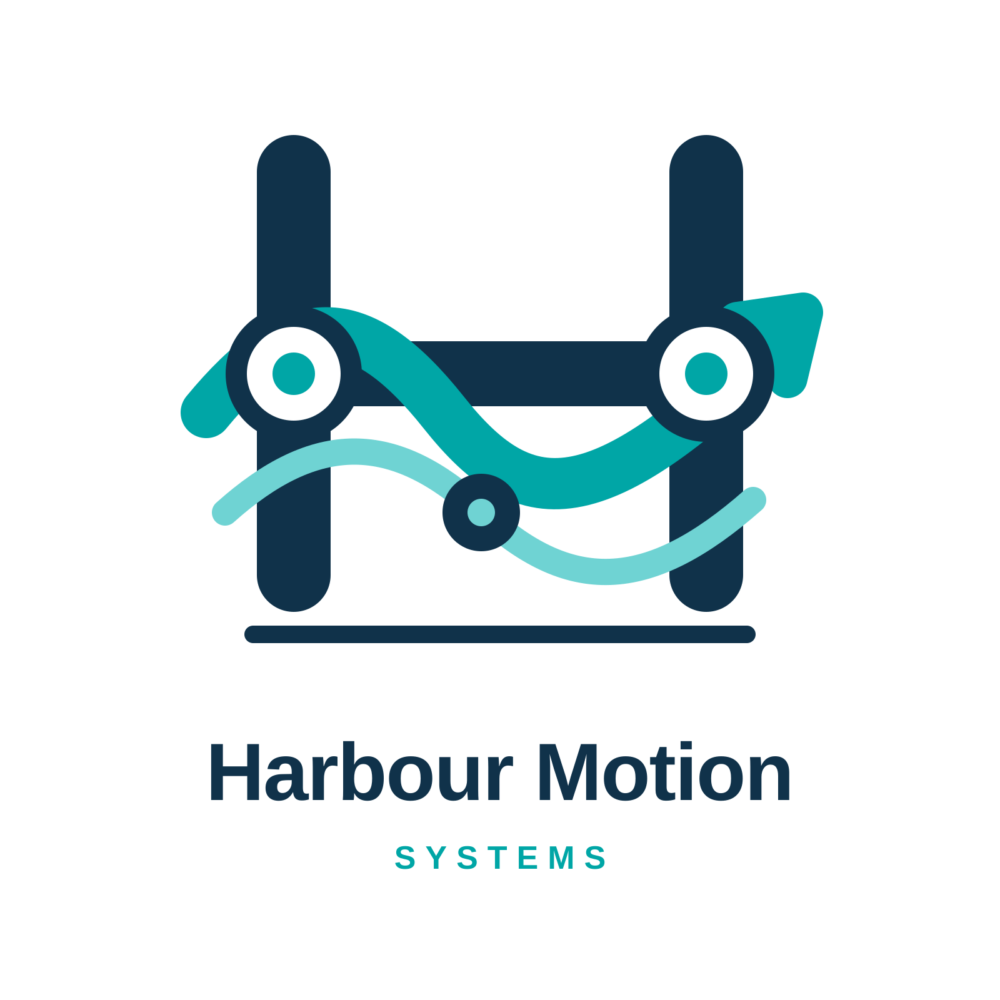

Veltact
From factory problem to supplier secured.
Opening production line
From factory problem to supplier secured.
Describe the issue once. Veltact structures factory context, reports and photos into a buyer-reviewed Need Profile with cited solution pathways.
Factory evidence / Need Profile / Cited pathwaysRapidMatch explains why each supplier fits, reaches approved candidates in parallel by link, email or SMS, and returns comparable commercial responses.
3 matches / Email + SMS / 2 responses
AxisForge RoboticsRobotic cell integration 94%
Southern Cell AutomationSafety and commissioning 88%
Harbour Motion SystemsControls and simulation 84%Open a real Pinch hosted Payment Link for the site-assessment milestone. Veltact marks the supplier secured only after verified payment evidence.
Pinch hosted payment / Verified / Supplier securedOne industrial need. One visible route from evidence to engagement.
Scroll to move the line
The interactive factory is unavailable. The Veltact story remains accessible.